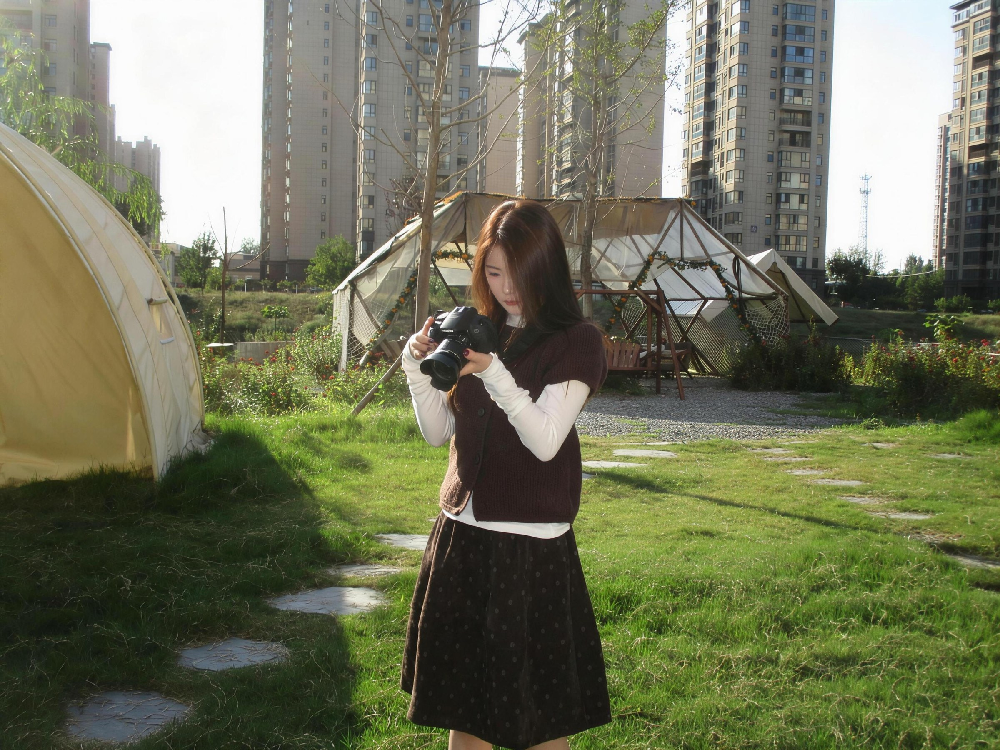

ON THE ROAD
↗下次去哪里？
不用排满行程。找一家小店，沿着河边走走，天黑再回去。
属于 CJJ 和 XME 的小世界。
把日子，慢慢收藏。

THE QUIET MOMENTS关于我们，关于途中，关于那些没什么特别的一天。
END OF SELECTIONMORE LIFE. MORE PHOTOS. ↗
镜头之外，还有一些想记下来的事。
随手记录 / 示例手记不用排满行程。找一家小店，沿着河边走走，天黑再回去。
咖啡还热，歌单刚好。坐一会儿，也是一件正经事。
闭眼的、笑场的、对焦错了的。那些照片，往往更像我们。
To be
continued↗